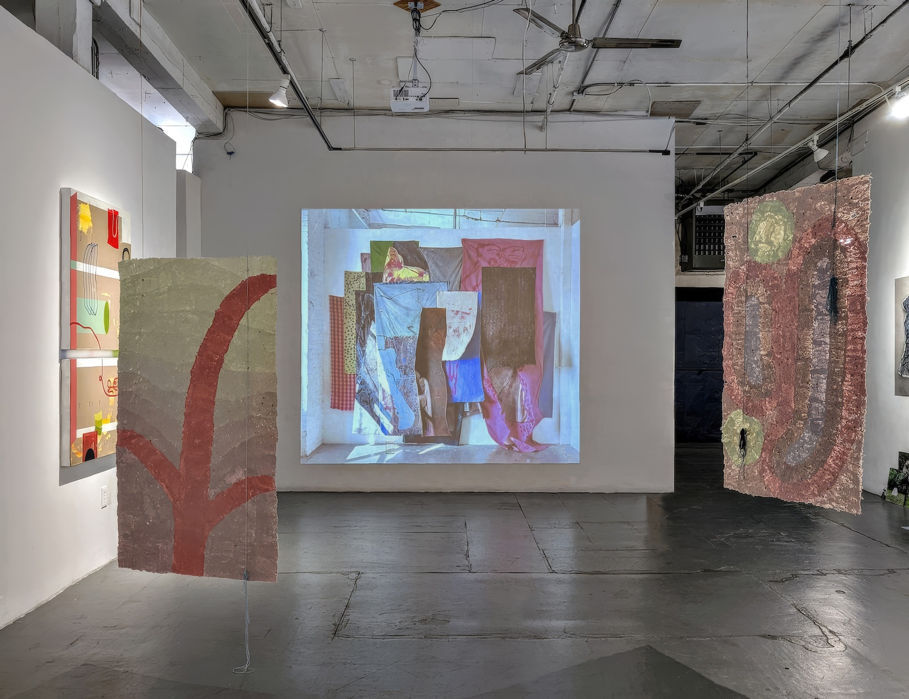
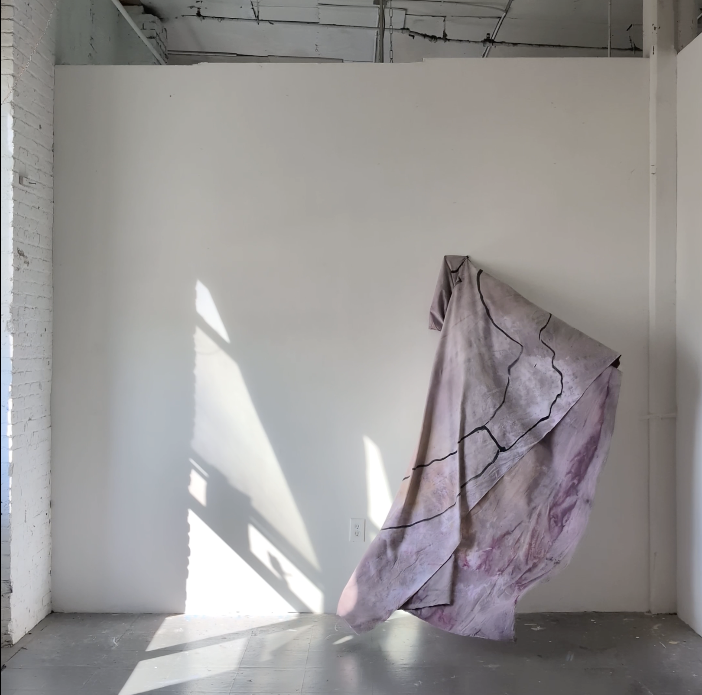
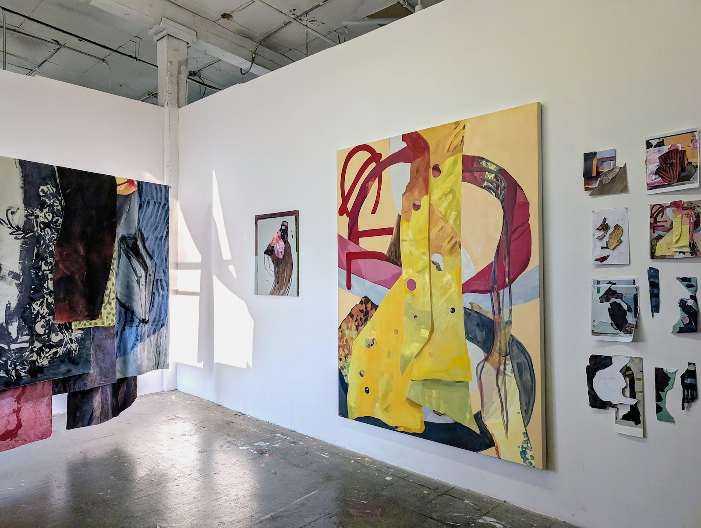
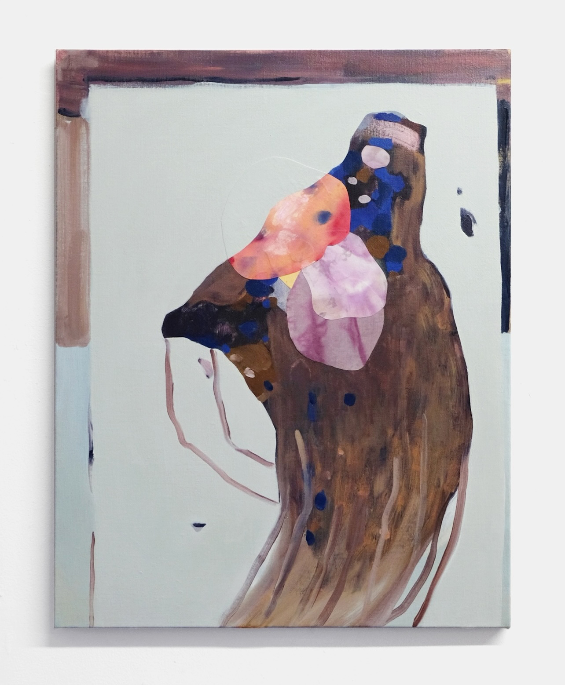
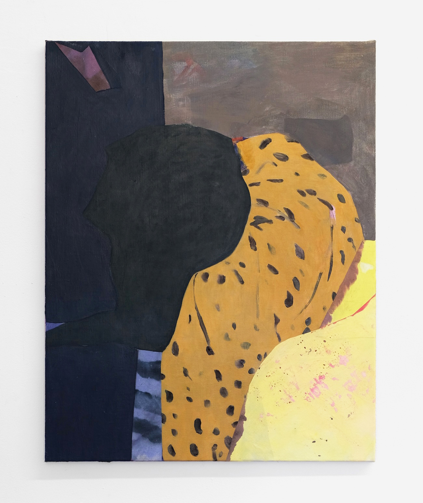

Holding Patterns (No.3), 2025, 4K digital video and sound, loop (video still)

NARS International Studio Residency, 2025

Flip, 2025, oil paint and fabric collage on linen, 28” x 22”

Crook, 2025, oil paint and fabric collage on linen, 28” x 22”